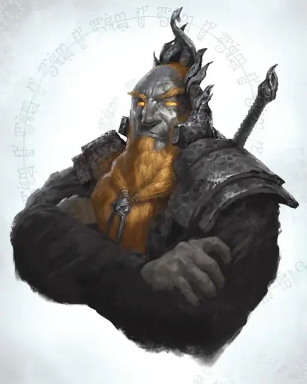

Герцог Залто
Duke Zalto
Огромный Великан, законно-злой, именной НИП

Класс Доспеха 18 (латы)
Хиты 221 (13к12 + 137)
Скорость 30 футов
| мод | спас | ||
|---|---|---|---|
| СИЛ | 25 | +7 | +7 |
| ЛОВ | 9 | −1 | +3 |
| ТЕЛ | 23 | +6 | +10 |
| мод | спас | ||
|---|---|---|---|
| ИНТ | 14 | +2 | +2 |
| МДР | 14 | +2 | +2 |
| ХАР | 13 | +1 | +5 |
Навыки Атлетика +11, Восприятие +6
Сопротивление урону электричество
Иммунитет к урону огонь
Чувства пассивное Восприятие 16
Языки Общий, Великаний, Эльфийский
Опасность 9 (5000 опыта)
Бонус мастерства +4
Особенности
Особое снаряжение. Залто носит кольцо сопротивления молнии [ring of resistance].
Новые опции для великанов. Некоторые взрослые огненные великаны тренированы осаждать цитадели и ломать вражеский строй.
Данная способность представлена в виде следующих умений. (Storm King's Thunder)
Осадное чудовище. Великан наносит двойное повреждение объектам и строениям.
Сбивание с ног. Когда великан входит на клетку занятую врагом первый раз за ход, враг должен преуспеть в спасброске Силы Сл 19 или упасть на землю.
Действия
Мультиатака. Великан совершает две атаки палицей.
Железная палица. Рукопашная атака оружием: +11 к попаданию, досягаемость 10 футов, одна цель. Попадание: 28 (6к6 + 7) дробящего урона.
Камень. Дальнобойная атака оружием: +11 к попаданию, дистанция 60/240 футов, одна цель. Попадание: 29 (4к10 + 7) дробящего урона.
Описание
Умелые ремесленники и организованные бойцы, огненные великаны обитают среди вулканов, потоков лавы и скалистых гор. Это безжалостные милитаристские громилы, чье мастерство в обработке металлов поистине легендарно.
Огненные кузни. Крепости огненных великанов находятся около и внутри вулканов или рядом с озерами магмы. Жар, исходящий от тех мест, где они живут, раскаляет докрасна стены их железных крепостей. В землях, где нет источников высокой температуры, им приходится сжигать много угля. Обычно кузни занимают почетные места в их владениях, и каменные крепости великанов постоянно извергают столбы дыма и сажи. В более отдаленных заставах огненные великаны сжигают тонны дров, чтобы поддержать температуру в своих кузницах. Это приводит к тому, что на много километров в округе не остается ни одного дерева, а вся почва покрывается сажей.
Огненные великаны ненавидят холод так же, как их родственники, ледяные великаны, ненавидят жар. Они могут приспосабливаться к холоду, но только с усилиями, надевая тяжелую шерстяную одежду и меха, и поддерживая тепло в очаге, чтобы оставаться в тепле.
Боевые эксперты. С самого рождения огненных великанов учат воевать. Еще в колыбели родители поют им песни о сражениях. Детьми огненные великаны играют в войну, кидаясь друг в друга вулканическими породами на берегах магмовых рек. Позднее военное обучение становится неотъемлемой частью жизни великанов в крепостях и подземных царствах дыма и пепла. Огненные великаны поют оды о выигранных и проигранных сражениях, а их танцы представляют собой боевое топанье ногами, резонирующее, словно кузнечные молоты в их задымленных залах.
Огненные великаны передают секреты своего мастерства из поколения в поколение, и их боевая удаль происходит не из дикой ярости, а из дисциплины и бесконечных тренировок. Многие враги недооценивают огненных великанов из-за их грубого поведения, и слишком поздно узнают, что те живут сражениями и могут быть хитрыми тактиками.
Феодальный строй. Гуманоиды, побежденные в войне, становятся вассалами огненных великанов. Вассалы должны отдавать своих подданных, чтобы те обрабатывали фермы и поля на окраине владений огненных великанов, выполняли роль прислуги в их замках, разводили скот и убирали поля. Также они вынуждены платить десятину огненным великанам.
Ремесленники огненных великанов чаще работают по опыту и вдохновению, чем по записям и вычислениям. Большинство огненных великанов не тратят время на подобную чепуху, для этого они держат рабов, которые разбираются в этом. Тех рабов, что не подходят для двора или полевых работ (особенно дварфов), огненные великаны отправляют в свои горные владения добывать руду и драгоценные камни из-под земли.
Огненные великаны низкого ранга управляют шахтами и рабами, трудящимися в них — немногие живут долго при такой опасной и трудной работе. Хоть огненные великаны и умеют прокладывать туннели и добывать руду, их не столько заботит безопасность рабов, сколько выплавка и обработка богатств, добываемых этими рабами.
Умелые ремесленники. Огненные великаны заработали грозную репутацию солдат и завоевателей своими поджогами, грабежом и разрушениями. Однако они воспитывают величайших мастеров и ремесленников среди всех великанов. Они превосходны как в выплавке и ковке, так и в больших постройках из металлов и камня, а качество их мастерства видно даже в разрушительных орудиях и оружии.
Огненные великаны стараются строить нерушимые крепости и сильнейшие осадные орудия. Они экспериментируют со сплавами, создавая крепчайшую броню, а затем куют мечи, способные её пронзить. Для такой работы в равной степени важны и мускулы и мозги, а огненные великаны, занимающие высокое положение, как правило, сильнейшие и умнейшие в своем роду.
См. дополнительно статью: "Бестиарий: Великаны"